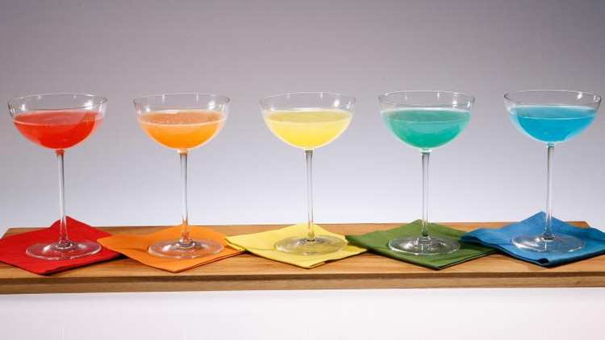

Odin Rainbow Mimosas recipe

Description
Just try it.
Ingridients
- 5 glasses Champagne
- 1 tablespoon grenadine
- Crushed ice
- 10 tablespoons pineapple juice (or any fruit juice)
- 60ml gin (or any clear liquor)
- Splash curacao
Steps
- Line up five glasses of Champagne on a work surface.
- To a cocktail shaker, add the grenadine and enough crushed ice to fill by three-quarters.
Slowly pour in the pineapple juice over the back of a spoon or ice cream scoop. Then add the gin and curacao; this will create layers. Strain into the Champagne glasses.